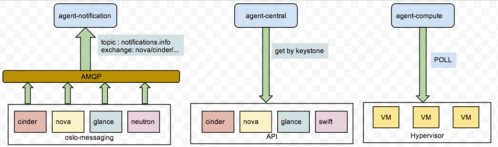
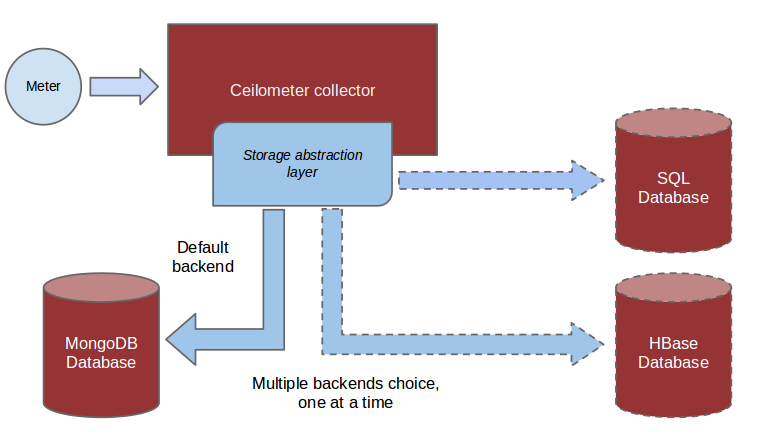

ceilometer的数据采集机制¶
ceilometer主要负责监控数据的采集，采集的项目包括虚拟机的性能数据，neutron-l3-router使用的网络带宽，glance&cinder&swift等租户使用信息，甚至是通过snmp采集物理机的信息，以及采集支持opendaylight的网络设备信息。
基本概念¶
ceilometer 主要有下面几个概念:
- meter 是ceilometer定义的监控项，诸如内存占用，网络IO，磁盘IO等等
- sample 是每个采集时间点上meter对应的值
- statistics 一般是统计学上某个周期内，meter对应的值(平均值之类)
- resource 是被监控的资源对象，这个可以是一台虚拟机，一台物理机或者一块云硬盘
- alarm 是ceilometer的告警机制，你可以通过阈值或者组合条件告警，并设置告警时触发的action
采集机制¶
ceilometer的各个服务中，与采集相关的服务是ceilometer-collector、ceilometer-agent-central、ceilometer-agent-compute、ceilometer-agent-notification。我们可以通过下图了解一下他们之间的关系:

agent-*服务负责采集信息，采集的信息可以通过三种方式publish出来，包括RPC、UDP、File。RPC是将采集的信息以payload方式发布到消息队列，collector服务通过监听对应的queue来收集这些信息，并保存到存储介质中；UDP通过socket创建一个UDP数据通道，然后collector通过bind这个socket来接收数据，并保存到存储介质中；File方式比较直接，就是将采集的数据以filelog的方式写入log文件中。
至于使用哪种方式publish，那么就要看你的pipline文件是如何配置的了，具体可以查看/etc/ceilometer/pipline.yaml中的publishers配置。
agent-*三个采集组件分别负责采集不同类型的信息，agent-notification负责收集各个组件推送到oslo-messaging的消息，oslo-messaging是openstack整体的消息队列框架，所有组件的消息队列都使用这个组件；agent-compute只负责收集虚拟机的CPU内存IO等信息，所以他需要安装在Hypervisor机器上；agent-central是通过各个组件API方式收集有用的信息；agent-notification只需监听AMQP中的queue即可收到信息，而agent-compute和agent-central都需要定期Poll轮询收集信息。看下图来了解一下:
信息通过agent-*采集并由collector汇总处理，最终需要持久化到存储介质中，ceilometer目前支持的存储包括mysql、DB2、HBase、mongoDB，从支持的数据库来看，监控数据持久化的压力还是相当大的。
采集项¶
agent-*组件在启动时候，通过stevedore的插件机制来加载采集项，包括每个采集项对应的执行程序。stevedore的插件配置是利用了setuptools的entry_points，所以我们可以通过查看entry_points的配置信息，来确定有哪些采集项。如果你的程序打包完毕并发布到了python的搜索路径中，那么你需要查看ceilometer的egg文件来查看，或者你可以下载源码查看setup.cf文件，相关信息如下:
[entry_points]
ceilometer.notification =
instance = ceilometer.compute.notifications.instance:Instance
instance_flavor = ceilometer.compute.notifications.instance:InstanceFlavor
memory = ceilometer.compute.notifications.instance:Memory
...
...
ceilometer.poll.compute =
disk.read.requests = ceilometer.compute.pollsters.disk:ReadRequestsPollster
cpu = ceilometer.compute.pollsters.cpu:CPUPollster
...
...
ceilometer.poll.central =
image = ceilometer.image.glance:ImagePollster
storage.containers.objects = ceilometer.objectstore.swift:ContainersObjectsPollster
...
...
ceilometer.notification 对应的是agent-notification组件，ceilometer.poll.compute对应的是agent-compute组件，ceilometer.poll.central对应的是agent-central组件。
采集neutron l3 router 的bandwidth¶
与ceilometer其他采集方式不同的是，bandwidth的采集是通过neutron-meter-agent收集，然后push到oslo-messaging，ceilometer-agent-notification通过监听消息队列来收取bandwidth信息，可以看一些官方的wiki(https://wiki.openstack.org/wiki/Neutron/Metering/Bandwidth)。
按照wiki上的描述，设置好rule，ceilometer就可以收集bandwidth信息了，router上的流量计算是利用了iptables的特性，iptables本身可以用于做流量统计，这里不清楚的去Google一下即可。
比如我们使用neutron-meter 设定了这样一组规则:
$ neutron meter-label-rule-list
+--------------------------------------+----------+-----------+------------------+
| id | excluded | direction | remote_ip_prefix |
+--------------------------------------+----------+-----------+------------------+
| d2f28556-7369-42a7-9a92-9f2a12e929ce | False | egress | 66.66.66.0/24 |
| e6a3542d-596b-415a-ab96-90df211c027b | False | ingress | 66.66.66.0/24 |
+--------------------------------------+----------+-----------+------------------+
那么对应此规则建立的iptables规则如下:
-A neutron-meter-r-d49bfb44-546 -d 66.66.66.0/24 -o qg-874a8e9b-4d -j neutron-meter-l-d49bfb44-546
-A neutron-meter-r-d49bfb44-546 -d 66.66.66.0/24 -i qg-874a8e9b-4d -j neutron-meter-l-d49bfb44-546
neutron-meter-agent 会在设定的间隔时间内去通过iptables统计流量，然后push到oslo-messaging:
$ ip netns exec qrouter-94cca346-ea17-48fe-94fd-30004078e339 iptables -t filter -L neutron-meter-l-d49bfb44-546 -n -v -x -Z
Chain neutron-meter-l-d49bfb44-546 (2 references)
pkts bytes target prot opt in out source destination
0 0 all -- * * 0.0.0.0/0 0.0.0.0/0
采集hardware¶
ceilometer除了可以收集openstack组件的相关信息，也可以收集诸如kwapi、hardware、opendaylight信息。kwapi是采集物理机能耗信息的项目，agent-central组件通过kwapi暴露的api来收集物理机的能耗信息；agent-central也可以通过snmp协议直接收集hardware的CPU、MEM、IO等信息；opendaylight是SDN解决方案的开源项目，opendaylight规范中包括暴露一个API接口来提供SDN内部的一些信息，agent-central正是通过这个API可以收集opendaylight组件的信息。
如果我们想扩展这些监控信息，需要对ceilometer增加一些额外的配置，但是这些配置原理都是一样的，我们这里以采集hardware信息为例。
首先需要在被监控的hardw上开启SNMP协议，比如我们要监控一台物理机host为icehouse-ncloud-compute-a1，系统为ubuntu，先安装snmp和snmpd包，然后修改配置文件:
#开启监听端口和对应的ip
agentAddress udp:161,udp6:[::1]:161
#开启所有SNMP访问项
view systemonly included .1 80
重启snmp服务，在ceilometer的pipline.yaml文件中加入如下(以采集hardware.memory为例)，interval是poll的轮询间隔时间，可以按自家需求配置:
- name: hardware_memory_source
interval: 1800
meters:
- "hardware.memory.*"
resources:
- snmp://icehouse-ncloud-compute-a1
sinks:
- meter_sink
通过 ceilometer meter-list | grep hardware ，可以看到新增的监控项，如果要查看监控数据可以这样:
$ ceilometer sample-list -m hardware.memory.total
+----------------------------+-----------------------+-------+-------------+------+---------------------+
| Resource ID | Name | Type | Volume | Unit | Timestamp |
+----------------------------+-----------------------+-------+-------------+------+---------------------+
| icehouse-ncloud-compute-a1 | hardware.memory.total | gauge | 131996840.0 | B | 2014-05-21T03:07:40 |
| icehouse-ncloud-compute-a1 | hardware.memory.total | gauge | 131996840.0 | B | 2014-05-21T02:37:40 |